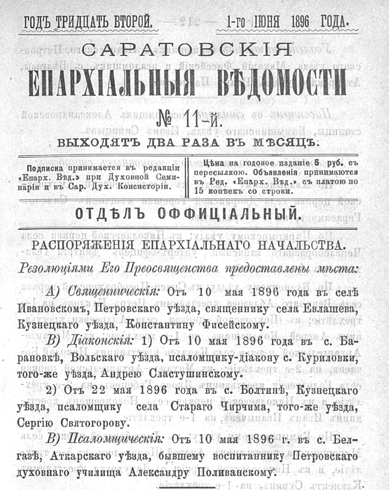
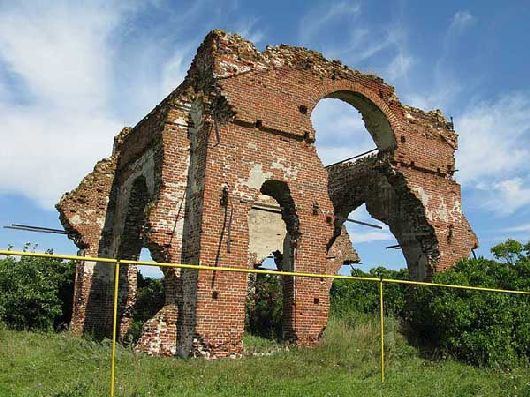
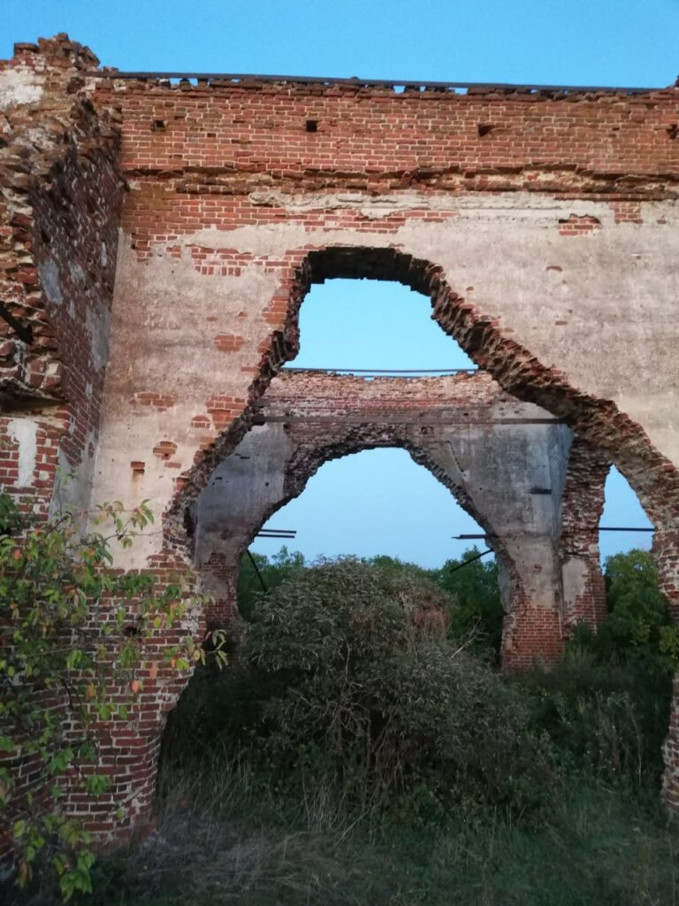
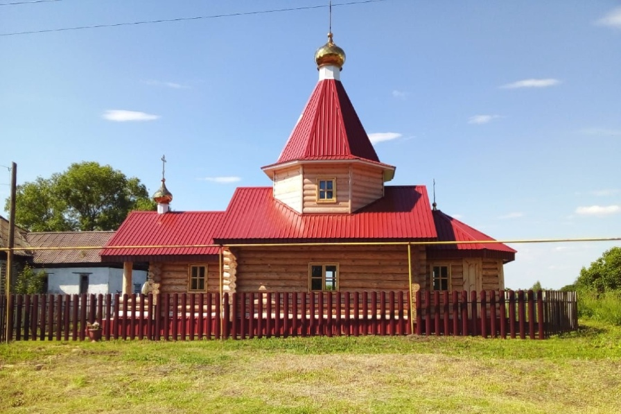

Глава IV
Фисейские: вторая духовная река
Каменские — мой фамильный ствол по отцовской линии. Но рядом с ним в этой книге есть и вторая корневая система — Фисейские. Они входят в мою родословную через Анну Константиновну Фисейскую-Каменскую, мою прабабушку и жену моего прадеда Евгения Ивановича Каменского. Но история этой линии начинается раньше — со Степана Михайловича Фисейского. Степан Михайлович родился в 1788 году. В источниках он указан как диакон. Его служение связано с Сердобском: Архангельский собор, Казанская Нагорная церковь, Казанская Заречная церковь. Перед нами снова не одинокая биография, а целый духовный ландшафт: город, собор, церковь, приход, семья.
История рода неразрывно связана с просветительской традицией духовных семинарий Российской империи. В XVIII–XIX веках, когда юные выходцы из семей духовенства поступали в Пензенскую семинарию, далеко не все из них обладали наследственными фамилиями. Для многих путь к знаниям начинался с обретения имени, которое становилось своего рода «академическим орденом».

Фамилия Фисейский сама по себе требует отдельного внимания. По одной из версий, она могла возникнуть в среде духовных учебных заведений — там, где ученикам нередко давали новые фамилии, связанные с античностью, христианской традицией, добродетелями, природными образами или книжной культурой. В этом смысле фамилия Фисейский может быть связана с именем Тесея — легендарного героя Афин. В старой церковнославянской и русской передаче греческая буква θ часто переходила в звук «ф»: так Феодор восходит к Theodoros, Фома — к Thomas. Поэтому сама возможность перехода от Тесея к форме Фисей / Фисейский выглядит не случайной и заслуживает внимания. Но для меня важно не превращать эту версию в доказанный факт. Пока у меня нет документа, где прямо сказано, почему именно эта фамилия была дана или закрепилась за нашей ветвью.
Поэтому я оставляю её как красивую и содержательную гипотезу. Если эта версия верна, то фамилия Фисейский несёт в себе не только звук древнего имени, но и образ устроителя, защитника, человека порядка. И в судьбах Макария Степановича и Константина Макаровича действительно можно увидеть нечто созидательное: служение, строительство храмов, церковное управление, заботу о приходской жизни и образовании. Это не просто боковая фамилия в родословной, а вторая духовная корневая система, вошедшая в нашу семью через мою прабабушку Анну Константиновну Фисейскую-Каменскую. Её отец, Константин Макарович, и дед, Макарий Степанович, принадлежали к тому же миру духовного служения, что и Каменские. Через них в эту книгу входит ещё одна линия храмов, приходов, училищ, семейной стойкости и церковной памяти.

Анна Константиновна Каменская, урождённая Фисейская
Моя прабабушка, дочь священника Константина Макаровича
Фисейского и жена моего прадеда Евгения Ивановича Каменского.
Анна Константиновна Фисейская родилась 23 сентября 1886 года. В 1904 году она окончила Саратовское Иоанникиевское епархиальное женское училище.

Для девушки из духовной семьи это было не просто образование, а часть того же церковного и культурного мира, в котором жили её отец и дед. Позднее Анна Константиновна вошла в семью Каменских. Она стала женой моего прадеда Евгения Ивановича Каменского и моей прабабушкой. Так в моей родословной сошлись две линии. В этом соединении не было ничего случайного. Семьи духовного сословия жили внутри общего образовательного, церковного и приходского мира. Мужчины служили в храмах, преподавали, становились священниками, диаконами, псаломщиками. Женщины учились в епархиальных училищах, входили в семьи священников, держали дом, воспитывали детей и сохраняли память, хотя в документах их голоса звучат гораздо тише.
Поэтому Анна Константиновна в этой книге не может быть просто строкой «жена Евгения Ивановича». Она — точка соединения двух родов. Через неё в линию Каменских входит Фисейская память: Сердобск, Ивановское, Иоанно-Воинская церковь, епархиальное женское образование и та тихая женская преемственность, без которой родовая история была бы неполной.
Отец Анны Константиновны, Макарий (Макар) Степанович Фисейский, родился в 1822 году и умер 18 марта 1909 года. Он был священником. Его жизнь особенно важна для этой книги, потому что с 25 октября 1844 года он служил в селе Ивановском, Иоанно-Воинской церкви. Это место станет для семейной памяти не просто точкой на карте. Оно станет образом — «Фисейской обителью». Макарий Степанович прожил долгую жизнь. Он прошёл через большую часть XIX века и встретил начало XX. Его служение длилось десятилетиями. В документах эта жизнь выглядит как набор дат, назначений и мест служения. Но за ними стоит другое: десятки лет у одного алтаря, поколения прихожан, крещения, венчания, отпевания, церковные праздники и будни священника, в которых приходская жизнь была не отдельной работой, а всем пространством существования. В 1896 году рядом с ним в истории Ивановского появляется его сын — Константин Макарович Фисейский. Константин Макарович родился в 1856 году и умер в 1930 году. Он был рукоположен во диакона в 1891 году, а в декабре 1892 года — во священника.

10 мая 1896 года Константин Макарович получает назначение в село Ивановское Петровского уезда. В этот же период Макарий Степанович, его отец, уходит за штат. Так в истории села Ивановского происходит передача духовного служения от отца к сыну. Восемьдесят шесть лет у одного алтаря. Отец и сын. Два поколения Фисейских. Два моих прямых предка. Макарий Степанович и Константин Макарович крестили, венчали, отпевали и молились за Ивановское так долго, что их служение стало частью самой памяти села. Для меня это уже не просто строка в документах. Это родовая молитва, растянутая почти на целый век.
Ивановка, и возвращение Фисейской памяти
У истории Фисейских есть не только архивная, но и современная линия возвращения памяти. Версию о происхождении фамилии Фисейский от имени Тесея я встретил в публикации Георгия Янса «Фисейская обитель».https://www.mk.ru/blogs/posts/fiseyskaya-obitel.html. Это не моя собственная догадка, а уже существовавшая исследовательская версия, которую Янс приводит в связи с историей Фисейских. В этой версии упоминается известный органист Александр Фисейский, передававший связь фамилии с античным именем Тесея. В изложении Янса эта версия получает и более широкий контекст: она связывается с традицией духовных училищ, где семинарские фамилии могли опираться на античность, греческую культуру, книжную образованность и церковную традицию. Я сохраняю эту версию как важную и красивую, но оставляю её именно в статусе версии, требующей дальнейшей проверки. В статье Георгия Янса особенно сильны три образа: руины старого Иоанно-Воинского храма, объявление Бузовлевского спиртзавода о продаже кирпича «от разобранной Ивановской церкви» и новый деревянный храм Иоанна Воина.
 |
 |
|---|
Руины старого Иоанно-Воинского храма в Ивановке. Храм связан со служением Фисейских; сегодня его остатки становятся видимым знаком разрушенной, но не исчезнувшей памяти.
Старый храм был разрушен. Его кирпичи превратились в строительный материал. Будничная строка объявления о продаже кирпича «от разобранной Ивановской церкви» звучит почти хозяйственно, но за ней стоит не просто разбор старого здания. За ней стоит эпоха, в которой советская власть последовательно уничтожала церковный мир: храмы, приходскую память, духовное служение и саму возможность открыто принадлежать к этой традиции.

Объявление Бузовлевского спиртзавода о продаже кирпича «от разобранной Ивановской церкви». Будничная строка, в которой судьба храма превращена в строительный материал.
Иоанно-Воинский храм был для Фисейских не каменной постройкой на сельской улице. Это было место десятилетий служения Макария Степановича и Константина Макаровича. Место молитвы, крещений, венчаний, отпеваний, церковных праздников, человеческих судеб. Поэтому его разрушение было ударом не только по стенам, но и по памяти целого приходского мира. С именем Константина Макаровича связано предание о последних днях старого Иоанно-Воинского храма. Согласно этому рассказу, когда началось разрушение церкви, отец Константин отказался покинуть алтарь. Его вывели силой. После этого храм был тяжело разрушен, но не исчез полностью: его остов устоял. В этой истории особенно важен сам жест сопротивления. Старый священник не спорил с властью на площади, не писал манифестов и не поднимал оружия. Он просто оставался у алтаря. Но в ту эпоху и это уже было инакомыслием — тихим, неподвижным, внутренним отказом признать, что святыню можно превратить в груду кирпича.
Спустя десятилетия в Ивановке появился новый деревянный храм Иоанна Воина. По рассказу Янса, инициатором и душой строительства нового храма был Алексей Шерстнев, прапорщик в отставке, вложивший в это дело собственные средства.
 |
 |
|---|
Новый деревянный храм Иоанна Воина в Ивановке
Новый храм не отменяет разрушения старого. Но он становится знаком того, что память может возвращаться не только в книгах и архивах, но и в самом пространстве села.
Иногда память остаётся в руинах храма. Иногда — в старом объявлении о продаже кирпича. Иногда — в новом деревянном храме. И всё это снова собирает Фисейскую линию в живую историю.